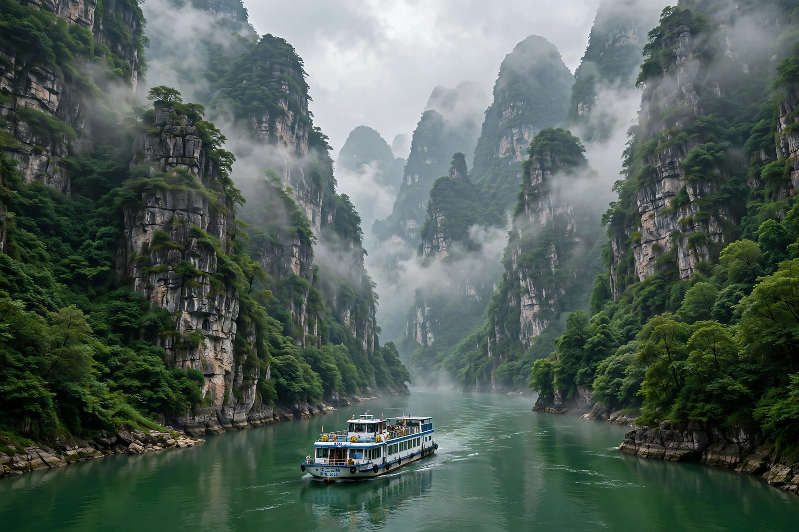

Yangtze
From Wikipedia, the free encyclopedia

Yangtze three gorges (image regenerated from memory)
The Yangtze or Yangzi (Chinese: Chang Jiang, 'Long River') is the longest river in Eurasia and the third-longest in the world, flowing about 6,300 km (3,900 mi) from glaciers on the Tibetan Plateau eastward through China to the East China Sea near Shanghai (length figure approximate).
Its basin drains roughly a fifth of China's land area and supports hundreds of millions of people; cities on its course include Chongqing, Wuhan, Nanjing and Shanghai. The Three Gorges Dam, the world's largest power station by installed capacity, was completed on the Yangtze in the 2000s. The river is habitat for the baiji dolphin (functionally extinct), the Chinese paddlefish (declared extinct) and the finless porpoise — symbols of the environmental pressure on the river system.
See also
China · Wuhan · Tibet · Shanghai · Three Gorges Dam